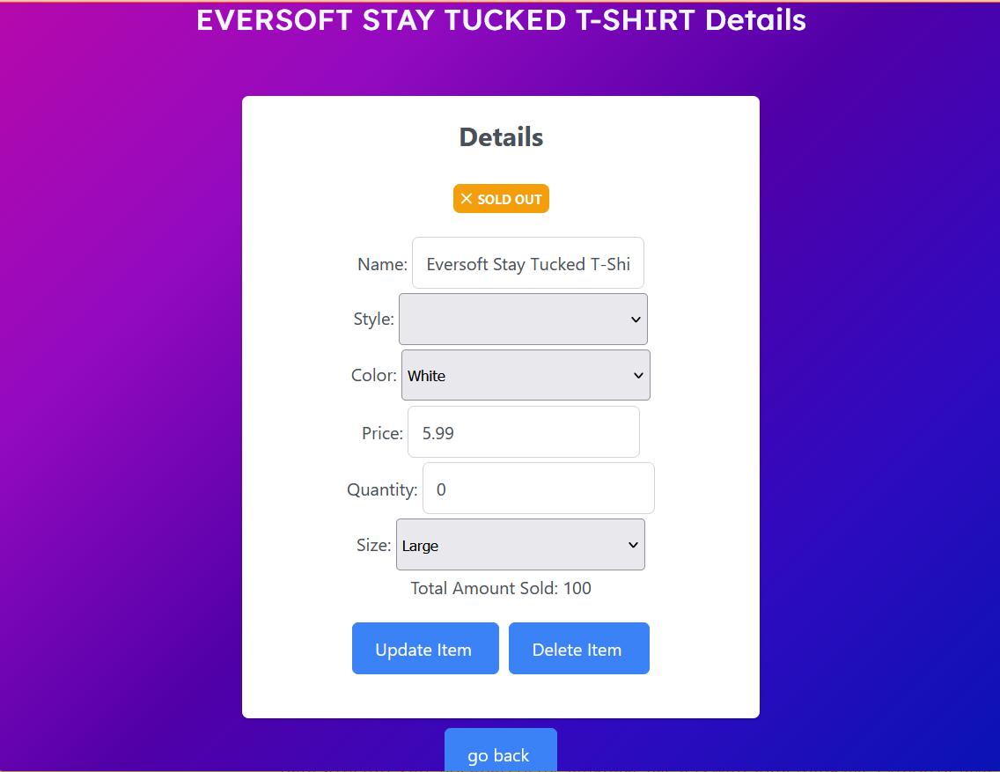
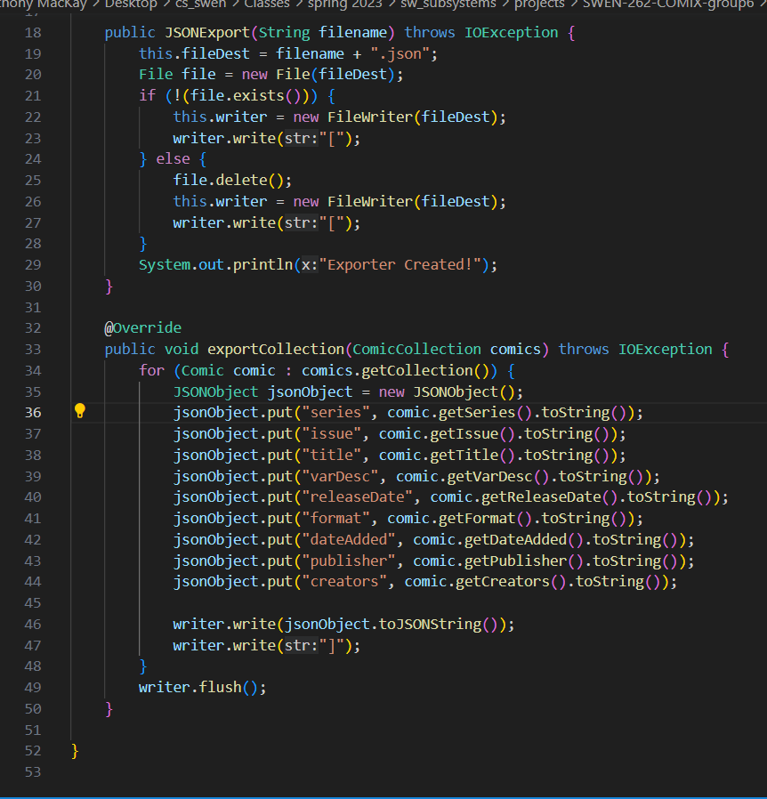
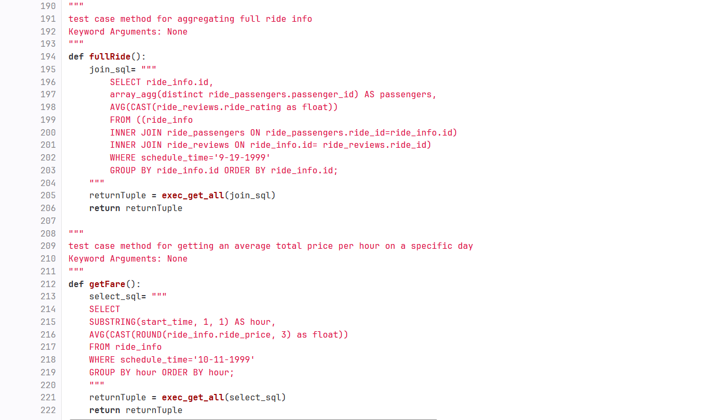
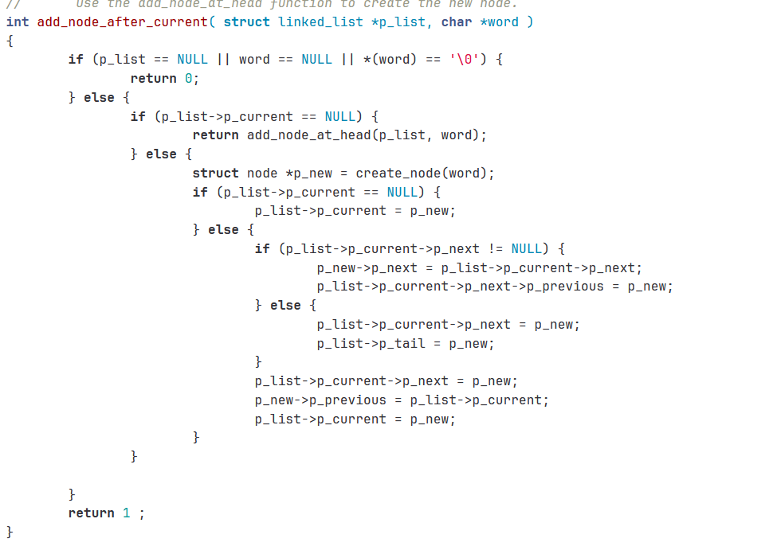

This project was my first introduction to alternate javascript frameworks for web development. This project required our team to utilize AngualrJS to create a far more dynamic and functional website than what I could have done before. Along with now working with a new web framework, I was also the primary CSS and styling consultant, in which I was the main factor for the quality appearance of our mock website.
One of my most challenging projects so far, the Comix Database Project tested my java abilities and my skills in working with reading and writing to files. I was tasked with developing the import/export funcitonality of our database. This meant programming the ability to export and import databases that are in the formats of CSV, CSV, and XML, so that the program will be able to work with all three formats when desired.
This was my first experience with databases in my time as a software engineer. Through this project, I was able to get all of the ropes and necessary introductory skills to learning database, including a newly developed affinity for postgreSQL, refinement of skills in Python, and a solid continued development of working in API's.
This is my most proud C project to date. Seeing as how C is a very early and relatively primitive mid-level language compared to many higher-level languages that most software engineers are familiar with, certain quality of life functions like advanced data structures are not apart of the language like it is with something like Python or Java. As such, learning how to construct a data structure from scratch has been incredible for developing my skills in one of my new favorite programming languages, teaching me around many of the advanced concepts such as structs and pointers.
